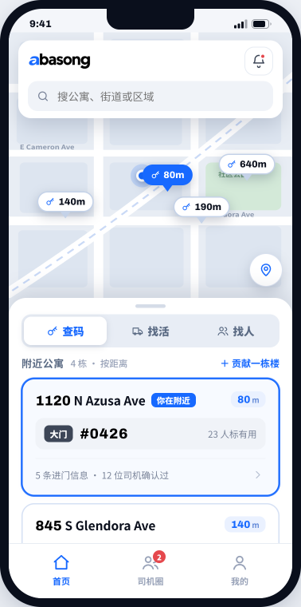
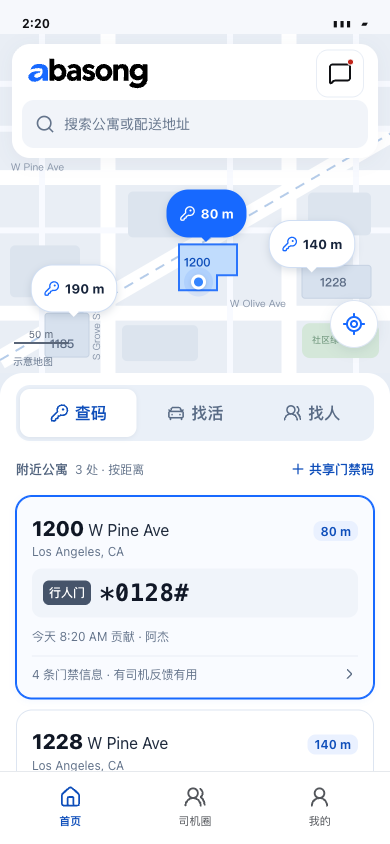
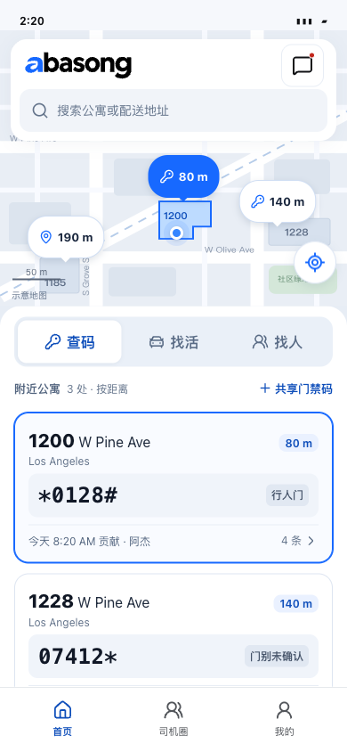

结构对齐以后，把信息排得更清楚。
V3.5 · M1.1 细节优化 · 2026-11-08

参考包含手机边框，内容宽度不同。借鉴层级，不逐像素照搬业务示例。
390×844，固定工具区较高，卡片信息分散。
同样 390×844，保留来源，合并工具区，让下一张信息可见。本轮主要取舍
| 部分 | 优化 | 保留的判断依据 |
|---|---|---|
| 公寓卡 | 门牌与码左对齐，门别右置，来源与条数合并 | 城市、时间和贡献人，符号与前导零 |
| 找活卡 | 报价与件数同条，到仓／接手时间独立 | 确定／约数／待确认、议价与仓库区域 |
| 找人卡 | 时段优先，未来标“待开始”，跨日写日期 | 愿去区域、可接容量、自报经验 |
| 工具区 | 三模式起点统一，筛选合并至分区行 | 有条件显示摘要；清除后恢复结果 |
建议体验
- 三模式切换：第一张完整可读，下一张能够看见；筛选入口和发布入口清楚区分。
- 滚动公寓、点地图标记、进入详情再返回；第三张无码可直接添加。
- 贡献失败重试和本人纠正后回原公寓；长门禁码仍完整显示。
- 找活筛选区域，清除条件；找人核对时段、待开始与自报信息。